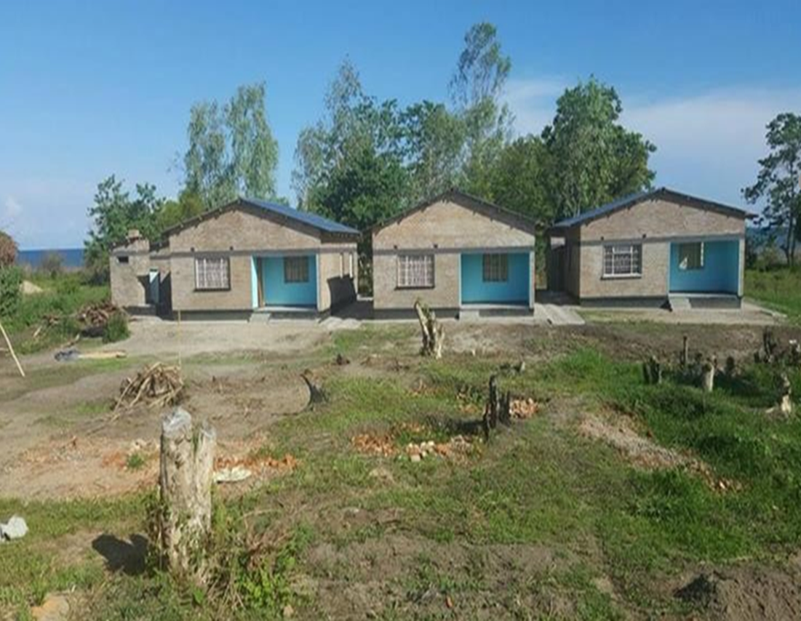

2. protect and conserve the natural environment and to minimize unavoidable impacts;
3. provide and maintain a healthy and safe work environment and safe systems of work;
4. protect the health and safety of local communities and users, with particular concern for those who are disabled, elderly, or otherwise vulnerable;
5. ensure that terms of employment and working conditions of all workers engaged in the Works meet the requirements of the ILO labour conventions to which Malawi is a signatory;
6. be intolerant of, and enforce disciplinary measures for illegal activities. To be intolerant of, and enforce disciplinary measures for GBV, inhumane treatment, sexual activity with children, and sexual harassment;
7. incorporate a gender perspective and provide an enabling environment where women and men have equal opportunity to participate in, and benefit from, planning and development of the Works;
8. work co-operatively, including with end users of the Works, relevant authorities, contractors and local communities;
9. engage with and listen to affected persons and organisations and be responsive to their concerns, with special regard for vulnerable, disabled, and elderly people;
10. provide an environment that fosters the exchange of information, views, and ideas that is free of any fear of retaliation, and protects whistle blowers; and 11. minimise the risk of HIV transmission and to mitigate the effects of HIV/AIDS associated with the execution of the Works.
